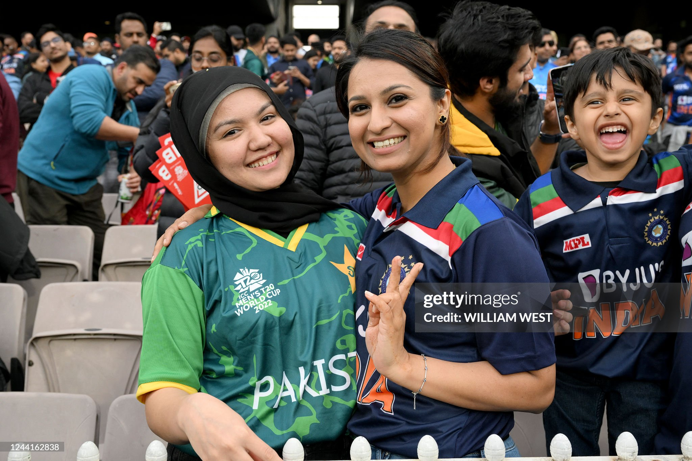

WE WERE THERE
“Every generation has its moments. We were there for his.”
Eighty thousand roaring in the stands, millions breathless in living rooms across time zones. Beyond the records, statistical centuries, and silver trophies live the personal memories etched forever into memory. An oral history preserved in the obsidian canon.
ARCHIVE SPEC // WITNESS REGISTRY
EXP. 800 ISO

OCTOBER 23, 2022 • MELBOURNE
MELBOURNE CRICKET GROUND • CAPACITY 90,293
RECORDED TRANSCRIPTS
DEPOSITIONS FROM THE CRUCIBLE
No depositions filed yet — this ledger is held in your browser alone.
PHYSICAL SPECIMEN EMULATION
SERIES VII COMMEMORATIVE
COMMEMORATIVE PASS
I WAS THERE.
AUTHENTICATED
18
PERMANENT REGISTRY
WITNESS TO THE FINAL CHAPTER
ENGRAVE YOUR CHAPTER
BECOME PART OF THE PERMANENT MONOGRAPHY
Whether you witnessed the masterclass from the concrete tiers of Melbourne, Leeds, or Wankhede, or stood paralyzed in front of a flickering television screen at midnight—your account belongs in the official ledger.
CURRENT REGISTRY STATUS
0